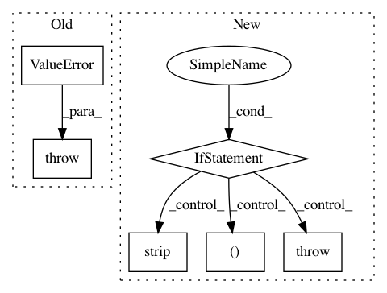

f4e6ec41d3b3e3583873f0a434a5fa5fc5e3c8d2,sos/sos_step.py,Base_Step_Executor,run,#Base_Step_Executor#,729
Before Change
if statement[0] == "=":
self.assign(statement[1], statement[2])
elif statement[0] == ":":
raise ValueError("Step input should be specified before others")
else:
try:
self.execute(statement[1])
except AbortExecution as e:
After Change
self.assign(statement[1], statement[2])
elif statement[0] == ":":
key, value = statement[1:]
if key != "depends":
raise ValueError("Step input should be specified before {}".format(key))
try:
args, kwargs = SoS_eval("__null_func__({})".format(value), self.step.sigil)
dfiles = self.expand_depends_files(*args)
// dfiles can be Undetermined
self.process_depends_args(dfiles, **kwargs)
except Exception as e:
raise RuntimeError("Failed to process step {}: {} ({})".format(key, value.strip(), e))
else:
try:
self.execute(statement[1])
In pattern: SUPERPATTERN
Frequency: 3
Non-data size: 6
Instances
Project Name: vatlab/SoS
Commit Name: f4e6ec41d3b3e3583873f0a434a5fa5fc5e3c8d2
Time: 2016-12-27
Author: ben.bog@gmail.com
File Name: sos/sos_step.py
Class Name: Base_Step_Executor
Method Name: run
Project Name: pcyin/tranX
Commit Name: 5e04ec7ae0b1b3b1ee321a28e09616653373cef5
Time: 2018-05-08
Author: pcyin@cs.cmu.edu
File Name: asdl/lang/sql/utils.py
Class Name:
Method Name: my_detokenize
Project Name: vatlab/SoS
Commit Name: 704ff3b12d057752035a8bc937141b563f8db4ff
Time: 2016-12-27
Author: ben.bog@gmail.com
File Name: sos/sos_step.py
Class Name: Base_Step_Executor
Method Name: run